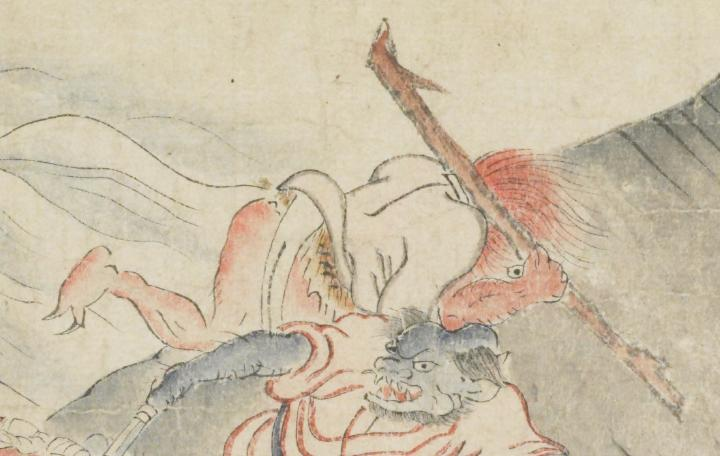

赤い肌の鬼。赤い髪を散切りにする。白い着物を着て、腰に毛皮を巻いている。足指は2本描かれ、鋭い爪が生えている。右手に長い棒を持ち、屈んで右側に向って逃げている。
著作者：坂本弥一郎徳定／出典：親書誌：U426_nichibunken_0080：伊吹山酒呑童子絵巻；イブキヤマシュテンドウジエマキ／日付：2007／資源識別子：U426_nichibunken_0080_0012_0001
Copyright (c)2010- International Research Center for Japanese Studies, Kyoto, Japan. All rights reserved.